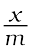
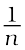

There are several examples, which reveal that the surface of a solid has the tendency to attract and retain the molecules of the phase with which it comes into contact. These molecules remain only at the surface and do not go deeper into the bulk. The accumulation of molecular species at the surface rather than in the bulk of a solid or liquid is termed adsorption. The molecular species or substance, which concentrates or accumulates at the surface is termed adsorbate and the material on the surface of which the adsorption takes place is called adsorbent.
Adsorption is essentially a surface phenomenon. Solids, particularly in finely divided state, have large surface area and therefore, charcoal, silica gel, alumina gel, clay, colloids, metals in finely divided state, etc. act as good adsorbents.
Adsorption in action
(i) If a gas like O2, H2, CO, Cl2, NH3 or SO2 is taken in a closed vessel containing powdered charcoal, it is observed that the pressure of the gas in the enclosed vessel decreases. The gas molecules concentrate at the surface of the charcoal, i.e., gases are adsorbed at the surface.
(ii) In a solution of an organic dye, say methylene blue, when animal charcoal is added and the solution is well shaken, it is observed that the filtrate turns colourless. The molecules of the dye, thus, accumulate on the surface of charcoal, i.e., are adsorbed.
(iii) Aqueous solution of raw sugar, when passed over beds of animal charcoal, becomes colourless as the colouring substances are adsorbed by the charcoal.
(iv) The air becomes dry in the presence of silica gel because the water molecules get adsorbed on the surface of the gel.
It is clear from the above examples that solid surfaces can hold the gas or liquid molecules by virtue of adsorption. The process of removing an adsorbed substance from a surface on which it is adsorbed is called desorption.
In adsorption, the substance is concentrated only at the surface and does not penetrate through the surface to the bulk of the adsorbent, while in absorption, the substance is uniformly distributed throughout the bulk of the solid. For example, when a chalk stick is dipped in ink, the surface retains the colour of the ink due to adsorption of coloured molecules while the solvent of the ink goes deeper into the stick due to absorption. On breaking the chalk stick, it is found to be white from inside. A distinction can be made between absorption and adsorption by taking an example of water vapour. Water vapours are absorbed by anhydrous calcium chloride but adsorbed by silica gel. In other words, in adsorption the concentration of the adsorbate increases only at the surface of the adsorbent, while in absorption the concentration is uniform throughout the bulk of the solid.
Both adsorption and absorption can take place simultaneously also. The term sorption is used to describe both the processes.
Adsorption arises due to the fact that the surface particles of the adsorbent are not in the same environment as the particles inside the bulk. Inside the adsorbent all the forces acting between the particles are mutually balanced but on the surface the particles are not surrounded by atoms or molecules of their kind on all sides, and hence they possess unbalanced or residual attractive forces. These forces of the adsorbent are responsible for attracting the adsorbate particles on its surface.The extent of adsorption increases with the increase of surface area per unit mass of the adsorbent at a given temperature and pressure.
Another important factor featuring adsorption is the heat of adsorption. During adsorption, there is always a decrease in residual forces of the surface, i.e., there is decrease in surface energy which appears as heat. Adsorption, therefore, is invariably an exothermic process. In other words, ∆H of adsorption is always negative. When a gas is adsorbed, the freedom of movement of its molecules become restricted. This amounts to decrease in the entropy of the gas after adsorption, i.e., ∆S is negative. Adsorption is thus accompanied by decrease in enthalpy as well as decrease in entropy of the system. For a process to be spontaneous, the thermodynamic requirement is that, at constant temperature and pressure, ∆G must be negative, i.e., there is a decrease in Gibbs energy. On the basis of equation, ∆G = ∆H – T∆S, ∆G can be negative if ∆H has sufficiently high negative value as – T∆S is positive. Thus, in an adsorption process, which is spontaneous, a combination of these two factors makes ∆G negative. As the adsorption proceeds, ∆H becomes less and less negative ultimately ∆H becomes equal to T∆S and ∆G becomes zero. At this state equilibrium is attained.
There are mainly two types of adsorption of gases on solids. If accumulation of gas on the surface of a solid occurs on account of weak van der Waals’ forces, the adsorption is termed as physical adsorption or physisorption. When the gas molecules or atoms are held to the solid surface by chemical bonds, the adsorption is termed chemical adsorption or chemisorption. The chemical bonds may be covalent or ionic in nature. Chemisorption involves a high energy of activation and is, therefore, often referred to as activated adsorption. Sometimes these two processes occur simultaneously and it is not easy to ascertain the type of adsorption. A physical adsorption at low temperature may pass into chemisorption as the temperature is increased. For example, dihydrogen is first adsorbed on nickel by van der Waals’ forces. Molecules of hydrogen then dissociate to form hydrogen atoms which are held on the surface by chemisorption.
Some of the important characteristics of both types of adsorption are described below:
(i) Lack of specificity: A given surface of an adsorbent does not show any preference for a particular gas as the van der Waals’ forces are universal.
(ii) Nature of adsorbate: The amount of gas adsorbed by a solid depends on the nature of gas. In general, easily liquefiable gases (i.e., with higher critical temperatures) are readily adsorbed as van der Waals’ forces are stronger near the critical temperatures. Thus, 1g of activated charcoal adsorbs more sulphur dioxide (critical temperature 630K), than methane (critical temperature 190K) which is still more than 4.5 mL of dihydrogen (critical temperature 33K).
(iii) Reversible nature: Physical adsorption of a gas by a solid is generally reversible. Thus,
Solid + Gas l Gas/Solid + Heat
More of gas is adsorbed when pressure is increased as the volume of the gas decreases (Le–Chateliers’s principle) and the gas can be removed by decreasing pressure. Since the adsorption process is exothermic, the physical adsorption occurs readily at low temperature and decreases with increasing temperature
(Le-Chatelier’s principle).
(iv) Surface area of adsorbent: The extent of adsorption increases with the increase of surface area of the adsorbent. Thus, finely divided metals and porous substances having large surface areas are good adsorbents.
(v) Enthalpy of adsorption: No doubt, physical adsorption is an exothermic process but its enthalpy of adsorption is quite low (20–40 kJ mol-1). This is because the attraction between gas molecules and solid surface is only due to weak van der Waals’ forces.
(i) High specificity: Chemisorption is highly specific and it will only occur if there is some possibility of chemical bonding between adsorbent and adsorbate. For example, oxygen is adsorbed on metals by virtue of oxide formation and hydrogen is adsorbed by transition metals due to hydride formation.
(ii) Irreversibility: As chemisorption involves compound formation, it is usually irreversible in nature. Chemisorption is also an exothermic process but the process is very slow at low temperatures on account of high energy of activation. Like most chemical changes, adsorption often increases with rise of temperature. Physisorption of a gas adsorbed at low temperature may change into chemisorption at a high temperature. Usually high pressure is also favourable for chemisorption.
(iii) Surface area: Like physical adsorption, chemisorption also increases with increase of surface area of the adsorbent.
(iv) Enthalpy of adsorption: Enthalpy of chemisorption is high (80-240 kJ mol-1) as it involves chemical bond formation.
| Physisorption | Chemisorption |
| 1: It arises because of van der Waals’ forces. | 1: It is caused by chemical bond formation. |
| 2: It is not specific in nature. | 2: It is highly specific in nature. |
| 3: It is reversible in nature. | 3: It is irreversible. |
| 4: It depends on the nature of gas. More easily liquefiable gases are adsorbed readily. | 4: It also depends on the nature of gas. Gases which can react with the adsorbent show chemisorption. |
| 5: Enthalpy of adsorption is low (20-40 kJ mol –1 )in this case. | 5: Enthalpy of adsorption is high (80-240 kJ mol –1 ) in this case. |
| 6: Low temperature is favourable 6. High temperature is favourable for adsorption. It decreases with increase of temperature. | 6: High temperature is favourable for adsorption. It increases with the increase of temperature. |
| 7: No appreciable activation energy is needed | 7: High activation energy is sometimes needed. |
| 8: It depends on the surface area. It increases with an increase of surface area. | 8: It also depends on the surface area. It too increases with an increase of surface area |
| 9: It results into multimolecular layers on adsorbent surface under high pressure. | 9: It results into unimolecular layer. |
The variation in the amount of gas adsorbed by the adsorbent with pressure at constant temperature can be expressed by means of a curve termed as adsorption isotherm.
Freundlich adsorption isotherm: Freundlich, in 1909, gave an empirical relationship between the quantity of gas adsorbed by unit mass of solid adsorbent and pressure at a particular temperature. The relationship can be expressed by the following equation:
 = k.p1/n (n > 1) ... (5.1)
where x is the mass of the gas adsorbed on mass m of the adsorbent at pressure P, k and n are constants which depend on the nature of the adsorbent and the gas at a particular temperature. The relationship is generally represented in the form of a curve where mass of the gas adsorbed per gram of the adsorbent is plotted against pressure (Fig. 5.1). These curves indicate that at a fixed pressure, there is a decrease in physical adsorption with increase in temperature. These curves always seem to approach saturation at high pressure.
Taking logarithm of eq. (5.1)
log = log k + log p ... (5.2)
The validity of Freundlich isotherm can be verified by plotting log on y-axis (ordinate) and log p on x-axis (abscissa). If it comes to be a straight line, the Freundlich isotherm is valid, otherwise not (Fig. 5.2). The slope of the straight line gives the value of . The intercept on the y-axis gives the value of log k.
Freundlich isotherm explains the behaviour of adsorption in an approximate manner. The factor can have values between 0 and 1 (probable range 0.1 to 0.5). Thus, equation (5.2) holds good over a limited range of pressure.
When = 0, = constant, the adsorption is independent of pressure.
When = 1, = k p, i.e. ∝ p, the adsorption varies directly with pressure.
Both the conditions are supported by experimental results. The experimental isotherms always seem to approach saturation at high pressure. This cannot be explained by Freundlich isotherm. Thus, it fails at high pressure.
Solids can adsorb solutes from solutions also. When a solution of acetic acid in water is shaken with charcoal, a part of the acid is adsorbed by the charcoal and the concentration of the acid decreases in the solution. Similarly, the litmus solution when shaken with charcoal becomes colourless. The precipitate of Mg(OH)2 attains blue colour when precipitated in presence of magneson reagent. The colour is due to adsorption of magneson. The following observations have been made in the case of adsorption from solution phase:
(i) The extent of adsorption decreases with an increase in temperature.
(ii) The extent of adsorption increases with an increase of surface area of the adsorbent.
(iii) The extent of adsorption depends on the concentration of the solute in solution.
(iv) The extent of adsorption depends on the nature of the adsorbent and the adsorbate.
The precise mechanism of adsorption from solution is not known. Freundlich’s equation approximately describes the behaviour of adsorption from solution with a difference that instead of pressure, concentration of the solution is taken into account, i.e.,
= kC1/n ...(5.3)
(C is the equilibrium concentration, i.e., when adsorption is complete). On taking logarithm of the above equation, we have
log = logk + logC ...(5.4)
Plotting log against log C a straight line is obtained which shows the validity of Freundlich isotherm. This can be tested experimentally by taking solutions of different concentrations of acetic acid. Equal volumes of solutions are added to equal amounts of charcoal in different flasks. The final concentration is determined in each flask after adsorption. The difference in the initial and final concentrations give the value of x. Using the above equation, validity of Freundlich isotherm can be established.
The phenomenon of adsorption finds a number of applications. Important ones are listed here:
(i) Production of high vacuum: The remaining traces of air can be adsorbed by charcoal from a vessel evacuated by a vacuum pump to give a very high vacuum.
(ii) Gas masks: Gas mask (a device which consists of activated charcoal or mixture of adsorbents) is usually used for breathing in coal mines to adsorb poisonous gases.
(iii) Control of humidity: Silica and aluminium gels are used as adsorbents for removing moisture and controlling humidity.
(iv) Removal of colouring matter from solutions: Animal charcoal removes colours of solutions by adsorbing coloured impurities.
(v) Heterogeneous catalysis: Adsorption of reactants on the solid surface of the catalysts increases the rate of reaction. There are many gaseous reactions of industrial importance involving solid catalysts. Manufacture of ammonia using iron as a catalyst, manufacture of H2SO4 by contact process and use of finely divided nickel in the hydrogenation of oils are excellent examples of heterogeneous catalysis.
(vi) Separation of inert gases: Due to the difference in degree of adsorption of gases by charcoal, a mixture of noble gases can be separated by adsorption on coconut charcoal at different temperatures.
(vii) In curing diseases: A number of drugs are used to kill germs by getting adsorbed on them.
(viii) Froth floatation process: A low grade sulphide ore is concentrated by separating it from silica and other earthy matter by this method using pine oil and frothing agent (see Unit 6).
(ix) Adsorption indicators: Surfaces of certain precipitates such as silver halides have the property of adsorbing some dyes like eosin, fluorescein, etc. and thereby producing a characteristic colour at the end point.
(x) Chromatographic analysis: Chromatographic analysis based on the phenomenon of adsorption finds a number of applications in analytical and industrial fields.